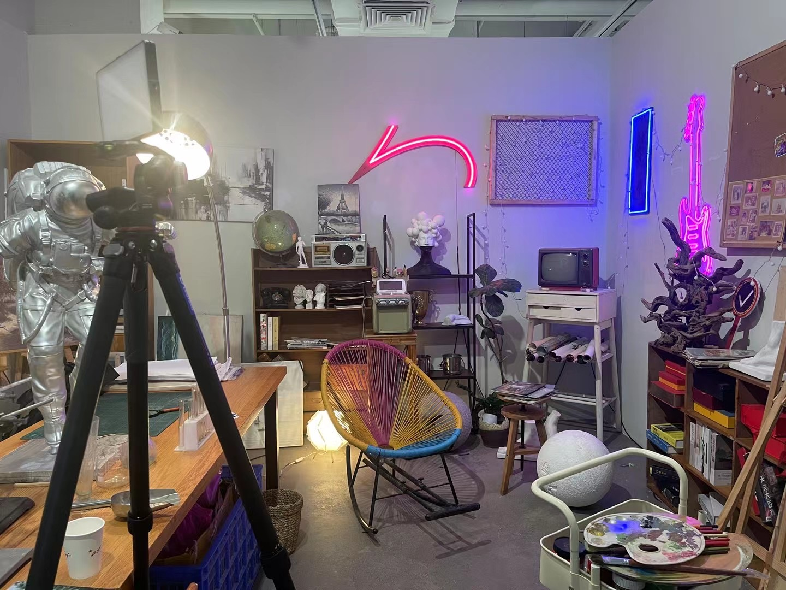
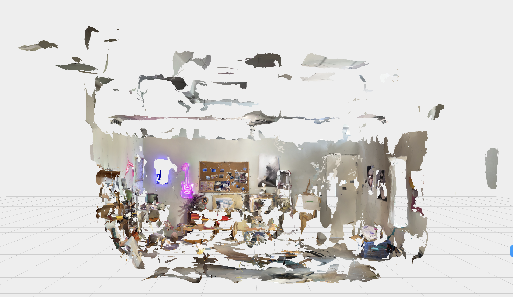

This is a collaborative project with the artist Wang Zhengxiang.
He initiated a project to create an ideal artist’s studio. He invited people to visit his studio and photographed each guest as if they were an artist. The audience was then asked to guess which portraits actually depict real artists.
He asked me to create a model of the most un-ideal ideal artist studio, based on his own studio.
So I photographed his studio, built a digital model of it, and then dismantled it into fragments that no longer resemble its original structure. Using various materials, I reconstructed these fragments into a miniature model of a shattered studio.